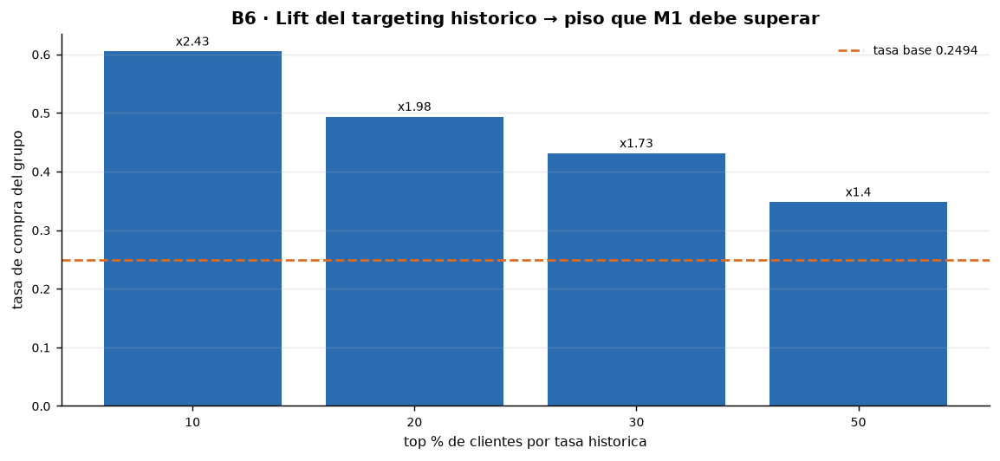
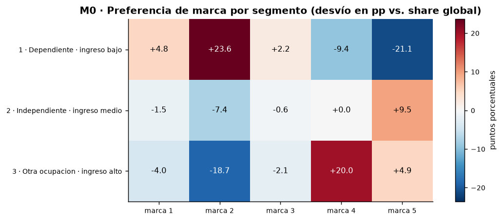
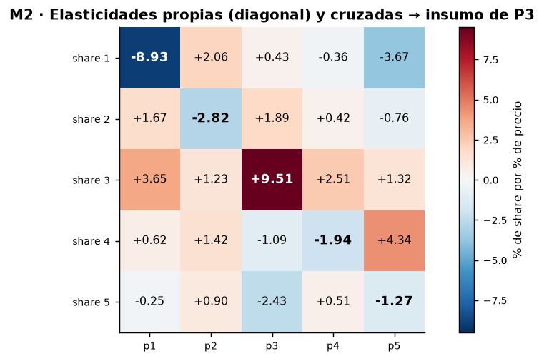
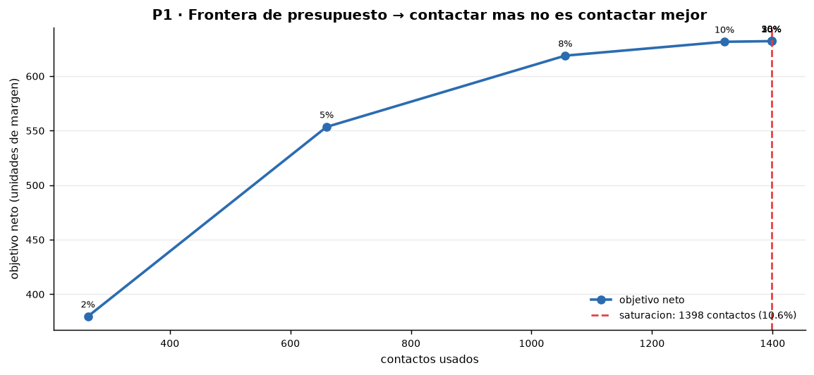
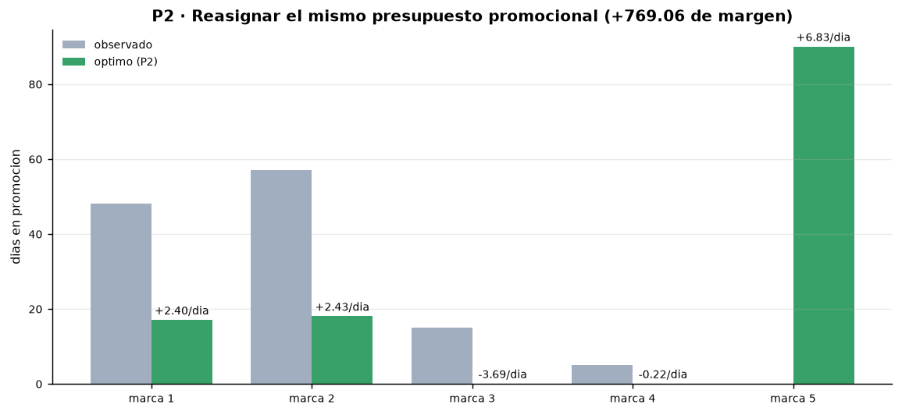
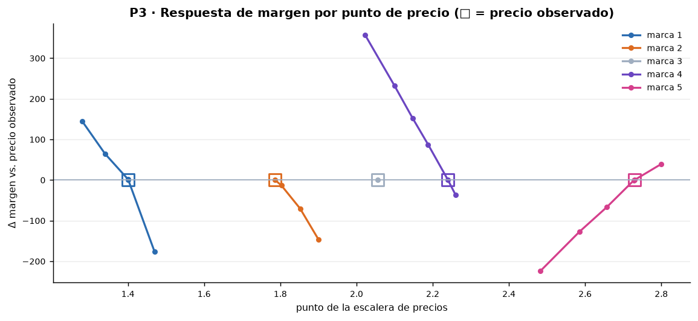
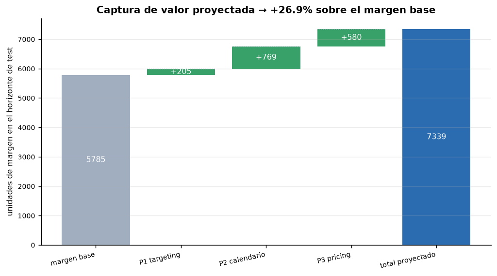

De 58 693 visitas a tres decisiones ejecutables: a quién contactar, qué marca promocionar y a qué precio vender.
El enunciado pide un modelo de propensión de compra. Este trabajo lo entrega, pero parte de una observación que cambia el orden de todo lo demás: un modelo de propensión no es una decisión. Predecir quién compra no dice a quién contactar con un presupuesto limitado, ni qué marca promocionar, ni a qué precio vender. Por eso la solución se estructuró primero como un problema de optimización y la capa de machine learning existe para estimar sus parámetros.
Las cinco conclusiones que un ejecutivo necesita:
costo/margen y se
verificó sobre test. Con 0.5 se contactaría el 9.7% de las visitas y se capturaría el 24.5%
de las compras.Objetivo de negocio: aumentar el margen de contribución de la cartera decidiendo mejor tres cosas que hoy se deciden por costumbre — a quién se contacta, qué se promociona y a qué precio se vende.
Objetivo técnico: estimar π (probabilidad de compra), q
(elección de marca) y λ (cantidad) con validación honesta, y usarlos para resolver
los tres sub-problemas de decisión.
Unidad de análisis: cliente × visita, verificada única sobre
(id, dia_visita). Validación: split temporal del día 550,
congelado antes de ajustar nada. Un train_test_split aleatorio sería inválido: con
~117 visitas por cliente repartiría visitas del mismo cliente entre train y test e inflaría
todas las métricas.
Dos capas. La prescriptiva decide; la predictiva estima los coeficientes que la primera necesita.
max Σ_ijt x_ijt · π_it · q_ijt · λ_ijt · Σ_k (y_jtk · m_jk) − a·Σ x_ijt − Σ d_j·z_jt x_ijt ofrecer la marca j al cliente i en t → P1 · targeting z_jt promocionar la marca j en t → P2 · calendario y_jtk vender la marca j al punto de precio k → P3 · pricing R1 un precio por marca · R2 presupuesto · R3 una oferta por visita · R4 fatiga R5 tope de días en promoción · R6 piso de margen · R7 arquitectura de marcas (activable)
La discretización del precio sobre la escalera observada (21 a 44 puntos por marca) es lo que convierte un MINLP intratable en un MILP resoluble. Y P1 —el modelo base entregable— resulta exactamente resoluble: su LP relajado es integral, de modo que el greedy por margen esperado es el óptimo. Eso no se cita del papel, se verifica en el notebook 05.
| Fase | Decisión que cierra | Cómo se verificó |
|---|---|---|
| 0 · Encuadre | unidad de análisis, targets, features admisibles y split del día 550 | contrato congelado con huella SHA-256; verify_frozen corre al inicio de cada fase |
| 1 · EDA | qué parámetros del problema son estimables y con qué forma | 44 cifras de referencia reproducidas; 13 controles de tratamiento |
| 2 · Features | 68 variables derivadas sin fuga; preprocesamiento en Pipeline | control E10: el ajuste solo en train cambia 48 parámetros del escalador |
| 3 · Segmentación (M0) | k = 3 segmentos, congelados con huella | elegido por codo y estabilidad (ARI 1.0 vs 0.79 en k=9), no por silhouette |
| 4 · Modelos | M1 logística, M2 random forest, M3 Poisson | comparación pareada fold a fold; validación con cliente nuevo y día futuro |
| 5 · Prescriptiva | P1 targeting, P2 calendario, P3 precio | optimalidad de P1 verificada contra el LP; P2 y P3 verificados en simulación conjunta |
| 6 · Despliegue | arquitectura multi-cloud, batch nocturno y endpoint | score_batch.py y serve_api.py ejecutables hoy |
El EDA no describe el dataset: produce los parámetros del problema de optimización. Cada hallazgo cierra con su consecuencia; un gráfico sin consecuencia no entró al entregable.
| Marca | Share compras | Share ingreso | % días promo | Lift de share | Δ incidencia | Lectura |
|---|---|---|---|---|---|---|
| marca 1 | 9.2% | 7.6% | 34.4% | ×1.08 | +3.16 pp | expande el mercado |
| marca 2 | 31.0% | 26.3% | 31.6% | ×1.39 | +3.93 pp | expande el mercado |
| marca 3 | 5.7% | 7.3% | 4.3% | ×1.86 | +0.64 pp | no distinguible del ruido |
| marca 4 | 20.0% | 23.0% | 11.8% | ×1.16 | +2.46 pp | expande el mercado |
| marca 5 | 34.0% | 35.8% | 3.6% | ×1.66 | +6.90 pp | expande el mercado |
Las dos columnas de la derecha son preguntas distintas que suelen confundirse. El lift de share mide canibalización entre marcas; la Δ incidencia mide si el descuento crea una compra que no habría ocurrido. La marca 3 tiene el lift de share más alto (×1.86) y no mueve la incidencia (z = 0.7): su descuento se paga con volumen ya vendido.

K-Means sobre la demografía a nivel cliente, con k = 3 elegido por codo y por
reproducibilidad (ARI medio 1.0 sobre remuestreos, frente a 0.79 con k = 9). La silhouette
prefería k = 9; la estabilidad decidió, porque un segmento que cambia de integrantes según la
muestra no sirve para planificar una campaña.
| Segmento | Clientes | Ingreso medio | Tasa de compra | Ticket | % del ingreso |
|---|---|---|---|---|---|
| 1 · Dependiente · ingreso bajo | 184 | 90 914 | 0.2019 | 5.18 | 26.6% |
| 2 · Independiente · ingreso medio | 248 | 127 190 | 0.2814 | 5.71 | 58.0% |
| 3 · Otra ocupacion · ingreso alto | 68 | 183 660 | 0.2550 | 6.41 | 15.4% |

Tres modelos encadenados, con la progresión de complejidad que el método exige y el resultado que midió, no el que se esperaba.
| Modelo | Elegido | Métrica en test | Contra qué |
|---|---|---|---|
| M1 · incidencia (π) | logística regularizada C=0.03 | PR-AUC 0.4776 | azar 0.2480 |
| M2 · elección de marca (q) | random forest | accuracy 0.7822 | clase mayoritaria 0.3407 |
| M3 · cantidad (λ) | Poisson | MAE 0.9790 | baseline de la media 1.1768 |
En M1 la complejidad no paga: la comparación pareada fold a fold da +0.0117 para el random forest con error estándar 0.0139 (t = 0.84). En M2 sí paga, y por un margen claro. Recorrer la progresión sirvió justamente para que la respuesta fuera distinta en cada caso.
GroupKFold por cliente no es el límite pesimista en un panel. Deja fuera al
cliente pero entrena con los mismos días, y como los 500 clientes comparten calendario, precios y
promociones, el modelo ya vio las condiciones de demanda de la validación: infla el PR-AUC del
random forest en 0.24. Todas las decisiones se tomaron con un esquema que cruza
cliente nuevo y día futuro.
El umbral no se fija en 0.5: es el que iguala margen esperado y costo de contacto, es decir
costo/margen. La regla se verificó sobre test — el óptimo empírico se desvía como
máximo 0.055 del teórico.
| costo/margen | umbral óptimo | visitas contactadas | compras capturadas | valor neto /1000 |
|---|---|---|---|---|
| 0.05 | 0.05 | 97.6% | 99.1% | 196.86 |
| 0.10 | 0.10 | 84.7% | 92.2% | 144.05 |
| 0.15 | 0.15 | 60.4% | 77.6% | 102.01 |
| 0.20 | 0.20 | 41.4% | 63.1% | 73.80 |
| 0.30 | 0.30 | 22.7% | 42.7% | 37.95 |
| 0.40 | 0.40 | 13.2% | 28.9% | 18.81 |
| 0.50 | 0.50 | 9.7% | 24.5% | 12.05 |
El logit multinomial entrega las elasticidades propias y cruzadas que P3 necesita. Cuatro de las cinco propias salen negativas, como deben.

Selecciona a quién contactar y con qué marca, bajo presupuesto y fatiga. Su optimalidad está verificada: el greedy alcanza el óptimo del LP relajado con cero variables fraccionarias.
| Política | Contactos | Margen esperado | Objetivo neto | Ingreso real capturado |
|---|---|---|---|---|
| azar | 2 639 | 809.50 | -42.95 | 3 340 |
| politica historica (tasa pasada) | 2 639 | 1 162.29 | 309.84 | 2 906 |
| solo propension (pi) | 2 639 | 1 251.44 | 398.99 | 4 633 |
| P1 (margen esperado) | 2 639 | 1 367.61 | 515.16 | 4 184 |
El punto de saturación está en 1 398 contactos (10.6% de las visitas): más allá, ninguna visita tiene margen esperado mayor que su costo de contacto. Ese es el presupuesto que el negocio necesita, y no más.

MILP con el tope de días por marca (R5) y el presupuesto del calendario observado: la pregunta no es cuánto gastar, es dónde.
| Marca | Días observados | Días óptimos | Cambio | Valor por día-promo |
|---|---|---|---|---|
| marca 1 | 48 | 17 | -31 | +2.4029 |
| marca 2 | 57 | 18 | -39 | +2.4335 |
| marca 3 | 15 | 0 | -15 | -3.6949 |
| marca 4 | 5 | 0 | -5 | -0.2190 |
| marca 5 | 0 | 90 | +90 | +6.8303 |

MILP sobre la escalera discreta, con piso de margen (R6) y una banda de confianza de ±10% alrededor del precio observado. La banda no es timidez: sin ella el óptimo se va al extremo de la grilla, que es la firma de un optimizador explotando al modelo donde no se validó.
| Marca | Precio observado | Precio elegido | Cambio | Estado |
|---|---|---|---|---|
| marca 1 | 1.401 | 1.280 | -8.6% | optimizable |
| marca 2 | 1.786 | 1.786 | +0.0% | optimizable |
| marca 3 | 2.056 | 2.056 | +0.0% | congelada: elasticidad no identificada |
| marca 4 | 2.240 | 2.100 | -6.2% | optimizable |
| marca 5 | 2.730 | 2.800 | +2.6% | optimizable |
Imponer R7 (ordenamiento de precios entre marcas) cuesta 124.74 unidades de margen. El brief lo anticipó como decisión de modelado, no como hecho del dato: ahora es una cifra que el negocio puede aceptar o rechazar sabiendo qué compra.


| KPI | Línea base | Con el modelo | Delta | Cómo se mide | Estado |
|---|---|---|---|---|---|
| Lift de conversion en el decil superior | x2.46 (politica por tasa historica) | x2.50 | +0.04 | A/B: decil superior del modelo vs. decil superior de la politica actual, misma semana, mismos vendedores | PROYECCION hasta tener el test |
| Margen incremental por targeting (P1) | 309.84 (politica vigente, mismo presupuesto) | 515.16 | +205.32 (+66.3%) | grupo de control: 10% de la cartera asignada por la politica vigente durante el piloto | PROYECCION hasta tener el grupo de control |
| Ahorro / reasignacion promocional (P2) | -183.84 (calendario observado) | 585.21 | +769.06 con el mismo numero de dias-promo | A/B geografico o por cartera: calendario reasignado en un grupo, calendario actual en el otro | PROYECCION hasta tener el test |
| Margen incremental por pricing (P3) | 5784.52 (precios observados) | 6364.20 | +579.68 (+10.0%) | test de precio por region o canal; es el unico KPI que **exige** experimento, porque la elasticidad es observacional | PROYECCION; sin test de precio no se recomienda ejecutar |
| Estabilidad del modelo en produccion | PSI de las features = 0 al desplegar | umbral de alerta PSI > 0.2; drift de la tasa de compra > 2 pp | — | monitoreo mensual contra la distribucion de train (dias 1-550) y contra la tasa base 0.2498 | requisito de operacion, no de captura |
| Área | Decisión que habilita | Cifra de esta fase | Sub-problema |
|---|---|---|---|
| Comercial / Ventas | a quien contactar y con que marca | 1398 contactos sobre 218 clientes; objetivo 632.00 | P1 |
| Marketing | a que marca y en que dias promocionar | reasignar 125 dias-promo vale +769.06 | P2 |
| Pricing | que precio por marca, y si diferenciar por segmento | plan de precios m1: -8.6%, m4: -6.2%, m5: +2.6%; elasticidad por segmento con rango 0.339 | P3 |
| Planeamiento / Inventario | demanda esperada por marca en el horizonte | margen esperado por marca: m1: 401, m2: 1149, m3: 456, m4: 1191, m5: 2588 | M1xM2xM3 |
El detalle completo está en docs/arquitectura-despliegue.md. Lo esencial: la
arquitectura es multi-cloud por capas, con una regla que la ordena — el dato pesado se
queda en una sola nube y lo que cruza es metadato y resultados.
| Capa | Servicio | Por qué este y no el del proveedor principal |
|---|---|---|
| Lake y gobierno | GCS + BigQuery (GCP) | cobra por consulta, no por cluster encendido |
| Procesamiento · cluster | Dataproc Serverless (GCP) | pega al lake sin egreso; Spark sin administrar |
| Orquestación · flow | Cloud Composer / Airflow | hace falta backfill histórico, donde Airflow gana |
| Feature store | offline + online, una sola definición | es el control E10 llevado a producción |
| Entrenamiento y registro | Vertex AI + MLflow | el entrenamiento vive donde viven los datos |
| Inferencia | batch nocturno + endpoint REST | la decisión es diaria; el tiempo real se agrega si hay caso |
| Identidad | Entra ID (Azure) | la organización ya administra identidades ahí |
| Consumo | Power BI (Azure) + CRM | es lo que la fuerza comercial ya usa |
verify_frozen del encuadre y de los segmentos pasa contra los artefactos publicados.| Parámetro | Valor usado | De dónde sale |
|---|---|---|
| c_j (costo unitario) | (1 - 30%) x precio medio de la marca | SUPUESTO: margen bruto declarado; el dataset no trae costos |
| m_j (margen unitario) | precio - c_j, entre 0.418 y 0.796 | derivado del supuesto anterior; sube si sube el precio |
| a (costo de contacto) | 0.3230 = 20% del margen de una venta media | SUPUESTO declarado, con sensibilidad en P1 |
| d_j (costo de un dia-promo) | 3.2302 = 2.0x el margen de una venta media | SUPUESTO declarado; P2 lo usa como costo fijo por dia-marca |
| B (presupuesto promocional) | el costo del calendario observado | DECISION: P2 reasigna, no aumenta (conclusion del EDA) |
| T_j (tope de dias en promo, R5) | 90 dias por marca | DECISION de salud de marca: ninguna marca en promo mas de la mitad del horizonte |
| rho (piso de margen, R6) | 10% sobre el costo | SUPUESTO declarado; acota el precio por abajo en P3 |
Ferreycorp ejecutará la solución, así que correr de extremo a extremo no es un extra:
uv sync uv run jupyter nbconvert --to notebook --execute --inplace notebooks/00_encuadre.ipynb uv run jupyter nbconvert --to notebook --execute --inplace notebooks/01_eda.ipynb ... notebooks/05_pricing.ipynb uv run python scripts/score_batch.py # lista de contacto del CRM uv run python scripts/serve_api.py # endpoint de scoring puntual open dashboard/index.html # dashboard interactivo (sin servidor)
Cuatro contratos congelados en artifacts/ con huella SHA-256 garantizan que las
cifras de este documento, del dashboard y de los notebooks son las mismas: hay una sola fuente y
tres renderizaciones. Si el dato o el encuadre cambian, las verificaciones fallan en vez de
producir un número distinto en silencio.